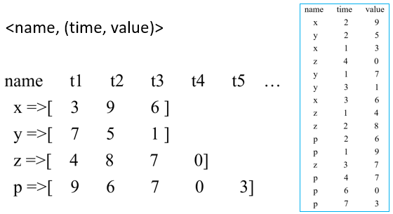
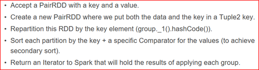
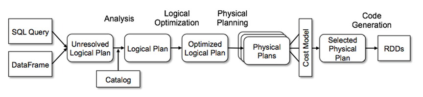
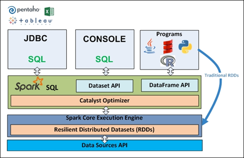
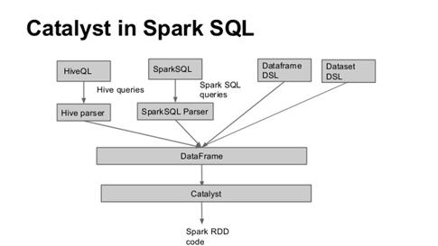
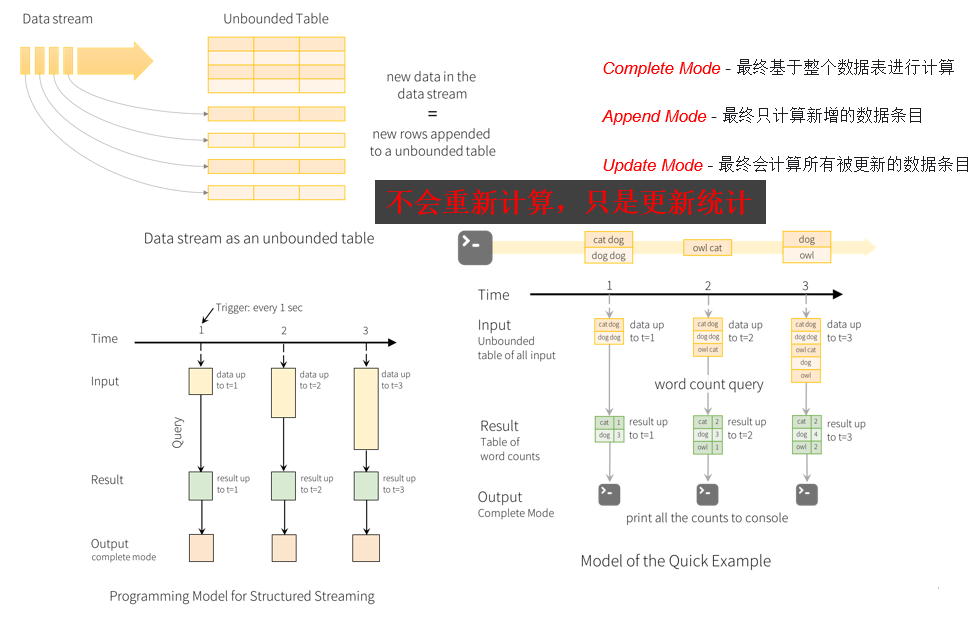
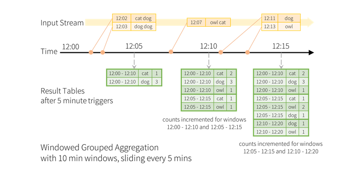
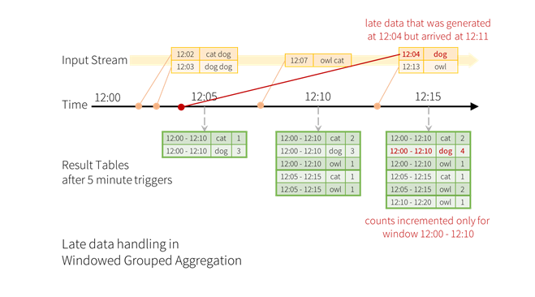
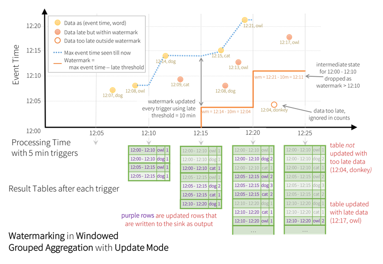
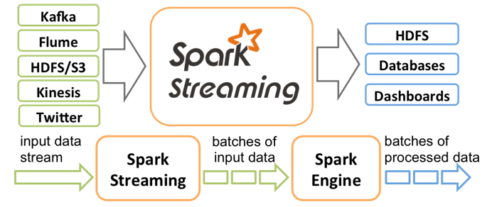

Hadoop
概论
- 面向数据存储和加工的平台
- 定义好编程模型和接口
- 用户编写Application，提交到平台：服务App vs. 运算App
- 开源，面向数据分析
- 不一定要在云上：分布式编程模型
问题
存储
- 单机容量足够，各机器上的文件要求对外显示它们存于同一硬盘空间；
- 文件大小超出单机容量，要求利用多台机器存入后对外显示依旧为一个完整文件；
计算
比如说数单词
可靠性
应对宕机
网络开销、利用率、成本
分布式解决方案
冗余存储与冗余计算
- 解决可靠性问题——不单纯靠额外增加设备的备份
- 将每台机器上存储的数据同时存于集群中的另一台机器上
- 将每台机器上数据的计算也同时在冗余数据的机器上计算
CMaster0明确知道每一份数据都存储在多个地方CMaster1会要求存有待计算数据的机器都参与计算，并选择先结束的机器计算结果
冗余存储不仅提高了分布式存储的可靠性，也提高了分布式计算的可靠性。
分布式存储和分布式计算可以相互独立存在
分布式存储（Distributed File System, DFS）
将多台机器硬盘以某种方式连接到一起
取机器cSlave0，cSlave1……和cMaster0，采用客户-服务器模式构建分布式存储集群。
让cMaster0管理cSlave0，cSlave1……。
对内：客户-服务器模式
只要保证store master正常工作，我们很容易随意
添加store slave，硬盘存储空间无限大。
对外：统一存储空间，统一文件接口
整个集群就像是一台机器、一片云，硬盘显示为
统一存储空间，文件接口统一。
分布式计算
“移动计算比移动数据更划算”——Google论文
计算的并行-Map

合并的并行-Reduce

经过洗牌之后，合并的时候分布的文本某一个特定单词的计数都送到某一个节点上进行合并，不同单词之间的合并技术可以并行
Hadoop简介
渊源
- Apache成立开源搜索引擎项目
Nutch——但开发过程中无法有效地将计算任务分配到多台机器上 - 前后Google陆续发表
GFS、MapReduce、BigTable（谷歌三板斧） - Apache借鉴GFS和MapReduce，实现了自己的
NDFS和MapReduce - 发现
Nutch侧重搜索，而NDFS和MapReduce偏向通用基础架构，将NDFS和MapReduce移出Nutch，成为独立开发项目，称为Hadoop
Hadoop 1.0 （1.X的统称）和Hadoop 2.0 （2.X的统称）架构差异较大。
简介
可看作是Google Cloud的开源版本；但并不拘泥于复现Google Cloud的相关产品。
Hadoop 描述 Hadoop HDFS Google GFS 分布式文件系统 Hadoop MapReduce Google MapReduce 分布式计算 HBase Google BigTable 分布式数据库 ZooKeeper Google Chubby 消息队列 Pig Google Sawzall 脚本语言
通过调用程序库，可使用简单的编程模型处理分布在不同机器上的大规模数据。
采用客户-服务器模式，很容易从一台机器扩展至成千上万台机器，每台机器均能提供本地存储和本地计算。
Hadoop 1.0
Hadoop Common：支持其他两个模块的公用组件Hadoop DFS（HDFS）：分布式文件系统Hadoop MapReduce：分布式计算框架
Hadoop 2.0

分布式操作系统
YarnZooKeeper：通用的分布式集群的数据管理者不仅仅只是为Hadoop服务！集群化思想
- 统一命名服务
- 配置管理
- 集群管理
Hbase：开源分布式数据库- 高可靠性
- 高性能
- 列存储
- 可伸缩
- 实时读写
逻辑模型：用户对数据的组织形式
行键、列（<列族>:<限定符>）、时间戳；字节码，无类型物理模型：在设备上具体存储形式
将行按照列族分割存储；逻辑空值无存储
应用领域
构建大型分布式集群（存储+计算）
- 最直接的应用
- 构建大型分布式集群，提供海量存储和计算服务
- 类似产品中国移动“大云”、淘宝“云梯”
数据仓库（存储）
存储半结构化业务数据，通过Hive、Hbase提供报表查询之类服务
数据挖掘（计算）
- 大数据环境下的数据挖掘思路和算法没有太大变化
- 硬盘性能和内存大小带来的限制——通过分布式集群解决硬件限制
部署方式
传统解压包（繁琐易错）和标准Linux部署方式（简单易用）
这里会有一个专门的作业，

注意下面均以Hadoop 2.0为基础
体系架构
Common
其他模块的公共组件，定义程序员取得集群服务的编程接口，为其他模块提供共用API。
作用
降低Hadoop设计的复杂性，减少其他模块间耦合性，增强Hadoop健壮性。
功能
- 提供公用API和程序员编程接口（例如Configuration类）；
- 本地Hadoop库（例如压缩解压缩用的是Hadoop本地库）；
- 超级用户superuser；
- 服务级别认证；
- HTTP认证；
HDFS
高容错、高扩展、高可靠，并提供服务访问接口，如API接口和管理员接口。
体系架构
- 架构：
master/slave；文件分块存储；namenode/datanode； - 典型拓扑：一般/商用（
ZooKeeper选举ActiveNamenode，JourNalNode两个Namenode交换数据）

内部特性
- 冗余备份、副本存放、副本选择、心跳检测
- 数据完整性检测、元数据磁盘失效
- 简单一致性模型、流式数据访问、客户端缓存
- 流水线复制、架构特征、超大规模数据集
对外功能
Namenode高可靠性：配置多个NameNode，一个失效时立即替换HDFS快照：当数据损坏时，支持回滚到正确的时间节点- 元数据管理与恢复工具：通过命令
hdfs oiv和hdfs oev管理修复fsimage和edits HDFS安全性：用户和文件级别安全认证、机器和服务级别安全认证HDFS配额功能：管理目录或文件配额大小HDFSC语言接口：使用C语言操作HDFS的接口HDFS Short-Circuit功能：客户端可以绕开Datanode直接读取本机数据，加快Map操作WebHdfs：通过Web方式操作HDFS（插、删、改、查）
Yarn
管理计算机资源、提供用户和程序访问系统资源的API。
- 一个高层的集群管理框架；
- 根据需要的计算类型，定制
ApplicationMaster； - 根据需要的调度策略，扩展
Scheduler
架构

组件详解
Client：客户端，负责向集群提交作业。ResourceManager：集群主进程，仲裁中心，负责集群资源管理和任务调度。Scheduler：资源仲裁模块。纯粹的资源仲裁中心ApplicationManager：选定，启动和只监管ApplicationMaster。NodeManager：集群从进程，管理监视Containers，执行具体任务。Container：本机资源集合体，如某Container为4个CPU，8GB内存。ApplicationMaster：任务执行和监管中心。负责任务整体执行
作业流程
- 提交作业
- 任务分配
- 任务执行
- 进度和状态更新
- 任务完成

典型拓扑

核心问题：调度策略
ResourceManager的Scheduler模块支持插拔，通过配置文件，用户可以个性化指定其调度策略。
自带策略1：容量调度算法CapacityScheduler
- 多用户多任务调度策略；
- 以队列为单位划分任务，以Container为单位分配资源；
- 按照配置好的资源配比为不同层级的用户分配最大可用资源；
自带策略2：公平调度算法FairScheduler
- 多任务公平使用集群资源的可插拔式调度策略；
- 当资源能够满足所有任务时，则按需分配资源；
- 当资源受限时，会将正在执行的任务释放的资源分配给在等待资源的任务；
- 短任务在合理时间内完成；长任务不至于永远等待；
MapReduce
编程范式。
Yarn中ApplicationMaster用来管理任务的执行，其能够管理的任务类型是固定的
通过定义不同类型的ApplicationMaster，可以实现管理不同类型的任务。可以将MapReduce看作一种类型的计算任务。提供对应的ApplicationMaster来管理MapReduce任务。
ApplicationMaster和Scheduler都是可变的。

拓展
- 在Hadoop框架内定义新的计算任务——编程模板
- 跳出Hadoop的限制——Spark——定义更加通用的编程
- 安全机制——不同级别、不同场景的安全认证
访问接口
Web
| 服务 | Web地址 | 配置文件 | 配置参数 |
|---|---|---|---|
HDFS | http://<NameNodeHostName>:50070 | hdfs-site.xml | {dfs.namenode.http-address} |
Yarn | http://<ResourceManagerHostName>:8088 | yarn-site.xml | {yarn.resourcemanager.webapp.address} |
MapReduce | http://<JobHistoryHostName>:19888 | mapred-site.xml | {mapreduce.jobhistory.webapp.address} |
命令行
HDFS命令
- 以tar包方式部署时，其执行方式是
$HADOOP_HOME/bin/hdfs - 以完全模式部署时，使用HDFS用户执行
hdfs即可
Yarn命令
- 以tar包方式部署时，其执行方式是
$HADOOP_HOME/bin/yarn - 以完全模式部署时，使用
Yarn用户执行yarn即可
Hadoop命令
- 两种部署方式下分别为
$HADOOP_HOME/bin/Hadoop和hadoop
其他
sbin/目录下的脚本
启停服务/管理服务
开发接口
HDFS编程
- 实例化配置文件
Configuration conf = new Configuration()； - 获取文件系统
FileSystem hdfs = FileSystem.get(conf)； - 使用
hdfs对象执行文件操作；
https://hadoop.apache.org/docs/r2.6.4/api/org/apache/hadoop/conf/Configuration.html
通过configuration传参：
conf.set(key, value)，context.getConfiguration().getInt(key)
Yarn编程
- 一套编程协议；
Client负责提交任务，ApplicationMaster负责执行任务；- Client中与RM通信；
ApplicationMaster与RM通信；ApplicationMaster与NM通信 - 编写符合协议的
Client和ApplicationMaster即可
只需考虑MapReduce本身
Hadoop默认实现了MapReduce的Client和ApplicationMaster、MRClientService和MRAppMaster等。
Yarn处理MR程序时使用了各种默认的类。
Spark
概论
简介
当今大数据领域最活跃、最热门的大数据计算处理框架
- 2009年——诞生于美国加州大学伯克利分校AMP实验室
- 2013年——Spark成为
Apache基金项目 - 2014年——成为
Apache基金顶级项目
一体化、多元化的大数据处理体系
- 批处理，
Batch Processing - 流处理，
Stream Processing - 即席查询，
Adhoc Query
开发包
Spark SQL、Spark Streaming、Spark Mllib、Spark GraphX……

Spark SQL
- 前身是Shark：基于Hive的Spark SQL，代码量大、复杂，难优化和维护
- 交互式查询、标准访问接口、兼容Hive
- 专门用于处理结构化数据：
- 分布式SQL引擎；在Spark程序中调用API
Spark Streaming
- 实时对大量数据进行快速处理，处理周期短
- 对数据分段、定义了自动监听更新的框架、提供各种Spark计算函数
Spark GraphX
- 以图为基础数据结构的算法实现和相关应用
- 使用RDD存储图节点和边信息，提供各种计算函数
Spark MLlib
- 为解决机器学习开发的库
包括分类、回归、聚类和协同过滤等。
插曲，
Spark Mllib的效率被基于MPI（Message Passing Interface）的机器学习吊打
Spark专注于数据的计算，而数据的存储在生产环境中往往还是由Hadoop分布式文件系统HDFS承担。
优势
对比Hadoop
支持多种数据计算需求
- 流式迭代的类MR计算
- 图数据结构的计算
基于内存的计算范式，不用像
Hadoop那样需要不停地写入硬盘（落盘）
Spark曾经是一个Hadoop应用程序，但是Spark并不一定要依赖于Hadoop
对比MapReduce
Spark是在Hadoop开创的分布式计算框架下对MapReduce编程范式进行扩展的一种更加通用的并行计算框架。
- 独立性更强
- 基于内存：RDD，速度更快；基于内存的计算快100x倍，基于硬盘的快10x倍
- 支持更多数据计算方法：
transformation，action等
整体优势
易用
支持Scala、Java、Python和R等多种编程语言
强大
支持SQL、Streaming、Graph和Machine Learning等多种应用场景
通用
适用于自带的Standalone、Mesos、Yarn等多种不同分布式集群管理框架；
适用多种不同数据存储方式（数据读取接口丰富）
部署模式
Local模式
Local是方便初学者入门学习和测试用的部署模式
Cluster模式
Cluster是真正的集群模式
Standalone集群管理器Yarn集群管理器Mesos集群管理器
提交模式
Client模式和Cluster模式
Local部署模式只支持Client提交模式。
真正的Cluster集群部署模式同时支持Client和Cluster提交模式。
Client提交模式
在worker节点启动Driver程序运行应用程序，结果返回到Client端。
Cluster提交模式
在Master上启动Driver程序，结果不会返回给Client而是保存在Master上。
内核机制解析

RDD（Resilient Distributed Datasets）
Spark是建立在RDD(Resilient Distributed Datasets，弹性分布式数据集)之上的。
RDD是一个容错的、并行的逻辑数据结构，使得Spark可以用一致的方式处理大数据的不同应用场景。
性质
RDD是高度受限的共享内存模型。
- RDD只能从外界接入或由其他RDD产生。
- 从父RDD到子RDD的过程可以构建一棵树（有向无环图，
Directed Acyclic Graph（DAG））。若子RDD出现问题，可以通过父RDD重新推演。
特点
- 数据存储到内存和磁盘中
- 控制数据分区
- 丰富的API操作数据
五大特性
- 分区列表：记录了数据块所在的分区位置；一个RDD对应的数据是切分为数据块存储在集群的不同节点上的。
- 依赖列表：记录了当前这个RDD依赖于哪些其它的RDD。
- 计算函数：用于计算RDD各个分区的值。
- 可选：分区器，子类可以重新指定新的分区方式：Hash和Range。
- 可选：计算各分区时优先的位置列表。例如从HDFS文件生成RDD时，HDFS文件所在位置就是对应生成的RDD分区所在位置的优先选择。
两种算子
Transformation
| Transformation操作 | 说明 |
|---|---|
map(func) | 对源RDD中的每个元素调用func，生产新的元素，这些元素构成新的RDD并返回 |
flatMap(func) | 与map类似，但是func的返回是多个成员 |
filter(func) | 对RDD成员进行过滤，成员调用func返回True的才保留，保留的构成新RDD返回 |
mapPartitions(func) | 和map类似，但是func作用于整个分区，类型是Iterator<T> => Iterator<T> |
mapPartitionsWithIndex(func) | … |
union(otherDataset) | … |
reduceByKey(func, [numTasks]) | 对<key, value>结构的RDD聚合，相同key的value调用reduce，func是(v,v)=>v |
join(otherDataset, [numTasks]) | … |
Action
| Action操作 | 说明 |
|---|---|
reduce(func) | 对RDD成员使用func进行reduce，func接收两个值返回一个值；reduce只有一个返回值。func会并发执行 |
collect() | 将RDD读取到Driver程序里面，类型是Array，要求RDD不能太大 |
count() | 返回RDD成员数量 |
first() | 返回RDD第一个成员，等价于take(1) |
take(n) | … |
saveAsTextFile(path) | 把RDD转换成文本内容并保存到指定的path路径下，可能有多个文件；path可以是本地文件系统路径，也可以是HDFS路径，转换方法是RDD成员的toString方法 |
saveAsSequenceFile(path) | … |
foreach(func) | 对RDD的每个成员执行func方法，没有返回值 |
弹性的七个方面
自动进行内存和磁盘存储的切换 效率考虑
优先内存，实在放不下则放到磁盘里。
基于Lineage（血统）的高效容错机制 效率考虑 容错考虑
记录每一个数据分片的计算来源，便于快速恢复。
Task如果失败会自动进行特定次数的重试 容错考虑
TaskScheduler获取一个Stage的TaskSet，运行它们；默认4次。
Stage如果失败会自动进行特定次数的重试 容错考虑
DAGScheduler调度Stage，Stage跟踪执行情况；默认4次。
Checkpoint和Persist（检查点和持久化）可主动或被动触发 效率考虑 容错考虑
用户能见的RDD可以主动调用，自动产生的中间RDD则可配置。
数据调度弹性（DAGScheduler、TaskScheduler和资源管理无关）效率考虑
任务调度、数据分配和计算资源的管理解耦：Yarn管理Spark集群
数据分片的高度弹性：合并分片和切分分片 效率考虑
根据产生的分片（数据块）大小自动选择继续切分还是放到磁盘
创建方式
- 通过已存在的数据集合创建（变量）
- 通过HDFS和本地文件系统创建
textFile(…) - 通过其他RDD转换（
transformation操作） - 从数据库读入
宽窄依赖

窄依赖（NarrowDependency） | 宽依赖（ShuffleDependency） |
|---|---|
| 父RDD中的Partition最多被子RDD的1个Partition所使用 | 一个父RDD的Partition会同时被子RDD的多个Partition所使用 |
| 完全并行执行 | 需要Shuffle后才能对计算并行化；Shuffle过程不能完全并行 |
 |  |
运算流程


构造DAG，划分Job、Stage、Task，遇到Action，才会提交Job。

Transformation：从持久化存储中通过变换（Transformations，如 map 或者 filter）将其载入内存，然后可以对 RDD 施加任何系统支持的一系列变换。它只是一个声明，不碰到Action运算不会进行。Action：将 RDD 重新持久化到外存中或者将控制权交还用户。Application：客户端的一次提交，可以看作一个主函数。Job：由action触发的一系列计算任务。Stage：把一个job按照宽依赖分割成若干阶段。Task：把stage根据RDD分区数进行区分。
解决的具体问题
Hadoop不能基于内存共享数据，反复读写磁盘。因此，Hadoop的MapReduce对迭代式算法支持的效率不高，更别提图算法和机器学习算法了。
Spark适应于在交互式数据挖掘工具中反复查询一个数据子集的应用场景。
缓存（Cache）
将RDD保存到内存（也可能在磁盘上），读写速度极快。
实现方式是在Persist持久化时将Storgelevel设置为MEMORY_ONLY
共12种StorageLevel；本质上和Persist没有区别，都是Persist方法，只是级别不同。
作用
计算RDD完成后对其进行缓存，若整个计算失败，可以从缓存读取这个RDD，避免重新计算这个RDD，提升容错效率。
适用场景
- 获取大量数据后；
- 进行一个非常长的计算链条，设置一些缓存点；
- 某个步骤计算非常耗时，步骤完成后对结果进行缓存；
- 进行
checkpoint前也会缓存；
Checkpoint
将RDD持久化到HDFS，利用HDFS的容错能力降低RDD数据丢失的风险。
它会将RDD的依赖清空，如果HDFS也不能保证数据不丢失，则任务需要重新启动。
四个层次的容错
Stage输出失败，上层调度器
DAGScheduler重试Task内部任务失败，底层
TaskScheduler调度器重试根据RDD Lineage血统重新计算
- 对于宽依赖而言，如果结果的一个
Partition出错，需要重新计算父RDD所有Partition - 对于窄依赖而言，如果结果的一个
Partition出错，只需重新计算父RDD被丢失Partition依赖的那个Partition Cache可看作时Lineage容错机制的效率提升机制，本身并无容错考虑，如果Cache丢失则仍需重新计算
- 对于宽依赖而言，如果结果的一个
Checkpoint机制
Scheduler
调度器，简洁清晰和高效。
- 输入：Spark RDD
- 输出：执行器Executor

Spark Driver
是运行Application的main函数。
负责初始化SparkContext，它负责。
与集群通讯、资源申请、任务分配和监控等。
流程
初始化SparkContext
初始化了TaskScheduler，SchedulerBackend，DAGScheduler。
RDD Transformation操作 RDD.Transformation==Lazy
只记录RDD之间依赖关系，和操作类型，不具体调用compute方法。
触发点：Action操作 RDD.action触发SparkContext的runJob
调用runJob，触发DAGScheduler调用submitJob。


DAGScheduler构建Stage
在createStage时从最后一个Stage开始递归构建Stage，并根据dependency类型划分Stage。

DAGScheduler构建Stage
在提交Stage时从最后一个Stage开始回溯直到没有前序Stage的第一个Stage，执行submitMissingTask。
构建好TaskSet，计算每一个Task最佳位置，将TaskSet提交给TaskScheduler。

TaskScheduler针对每一个TaskSet细粒度调度和执行
- 根据
Task位置和执行器信息分配Task到Executor。 - 通过
SchedulerBackend将执行命令发送到Executor上开始执行。 - 通过
SchedulerBackend获得执行器相关信息。

注意图中的两个调度算法。先来先服务和公平调度。
要先知道执行器的相关信息才能发送执行，因此要看Driver、Master、Work如何通信！
Executor
创建Executor
首先
Application要向Master注册——由SchedulerBackend通过AppClient的子类ClientEndpoint完成；Master回复注册成功，并将Application发送到满足条件的Worker上，在Work上启动Executor；通过
Worker的RpcEndpoint向Worker发送启动Executor请求；Worker收到请求后启动ExecutorRunner，并通知Master Executor的相关信息；此时本质上是启动了负责帮
Executor和Driver通信的Backend：ExecutorBackend；ExecutorBackend直接向Driver注册Worker让它准备启动的Executor；收到
Driver确认后，Executor正式新建；是
Executor主动联系Driver，让SchedulerBackend了解到所有Executor的信息，再让TaskScheduler根据Executor情况分配Task到Executor
Executor资源分配
Driver启动的时候从spark-submit收集对executor的需求，并在向Master注册时发送过去；- 具体可以参考如何从提交程序收集需求，并一直传递给
Master，再给Worker； ExecutorRunner从Worker那里得到这些参数，并在根据参数启动ExecutorBackendJVM进程；
Executor启动
- 在
ExecutorBackend向Driver注册后，收到确认时的操作就是创建Executor； - 此时
TaskScheduler根据Executor情况安排好TaskSet调度，Executor也启动好了；
通过DriverEndpoint向ExecutorBackend发送执行Task的消息

ExecutorBackend收到LaunchTask通知后
调用
Executor的launchTask方法；内部创建
TaskRuner，用线程池执行TaskRunner，调用run方法；- 反序列化出
Task - 调用
Task的run方法
- 反序列化出
Storage
通信层
Master-Slave结构，传输控制和状态信息。
BlockManager, BlockManagerMaster, BlockManagerMasterEndpoint, BlockManagerSlaveEndpoint。
存储层
负责将数据存储到内存、磁盘或堆外内存中，为数据在远程节点生成副本。
DiskStore, MemoryStore。


Shuffle
【1】RDD创建过程
构建RDD时确定好与父RDD之间的依赖关系，如果是ShuffleDependency，会向ShuffleManager注册，获取Handle，用来保存父RDD的相关信息。
【2】RDD计算过程
在实际计算时，runTask会调用RDD compute方法，其中根据dependency获取reader读取用来计算RDD的输入数据，也就是之前shuffle操作写入的数据。
【3】Task结束处理
当runTask完成计算后，获取子RDD之间的依赖关系，如果是shuffle依赖则同样通过dependency和ShuffleManager获得Handle，进而获得writer。
可插拔的Shuffle框架
•ShuffleDependency，ShuffleManager，ShuffleHandle
•ShuffleReader，ShuffleWriter
•ShuffleMapTask，ResultTask
拓展
Shuffle前后必不可少地需要网络I/O，因此通过数据序列化方法和压缩技术进行效率优化。
Spark中序列化方法和压缩算法的配置
Spark 1.0：基于Hash的Shuffle机制
每一个Mapper阶段的Task都会为Reduce阶段的每一个Task生成1个文件，M*R个。
合并机制：每一个执行单位为Reduce阶段每一个Task生成1个文件。
Spark 1.1：基于Sort的Shuffle机制
每一个Mapper阶段的Task生成两个文件：索引和数据文件，Reduce阶段通过索引读取。
Spark 1.4：钨丝计划——优化内存管理模型
直接使用二进制数据，而不是Java对象；避免序列化和反序列化开销。
部署实验
详情参见 https://ydjsir.com.cn/2021/10/17/initSpark/。
"实践"
参考：https://spark.apache.org/docs/2.1.1/programming-guide.html
基础
从数据源到RDD
parallelize()（把一个普通的collection变成支持分布式的）textFile(path)hadoopFile(path)sequenceFile(path)objectFile(path)binaryFiles(path)- ……
从RDD到目标数据
•saveAsTextFile(path)
•saveAsSequenceFile(path)
•saveAsObjectFile(path)
•saveAsHadoopFile(path)
•……
二次排序
- 指在归约（reduce）阶段对某个键关联的值排序；
- Map阶段可以对
<key, value>对按照键的值进行排序，但是归约器不会自动对键值对按照值排序；但是有时候需要：将成绩按照班级归约后排序；店铺产品销量排序等
例：按照name（第一标准）和time（第二标准）对value排序

归约只能做到按照name把值区分开，但是分好后再对value按照time排序时，需要进行二次排序。
方案1：在内存中实现排序，只借助Map-Reduce框架进行分组
组内直接在内存中调用排序函数。
- 创建
SparkContext对象；连接到Spark master；读取原始数据； - 构建<键,值>对;
- 按照键分组：
groupByKey； - 对每个组对应的新的value(是一个列表)进行排序操作；
不具备伸缩性，单个服务器的内存又成为瓶颈。
方案2.1：利用框架实现值排序
自定义Key + sortByKey()：组合键。
- 自定义组合键：
<<name, time>, value>； - 调用
sortByKey时会用<name, time>排序，因此要比较<name, time>大小； - 在自定义
Key中定义好compare方法； - 按照自定义Key格式实现
mapToPair - 最后调用
sortByKey()
方案2.2：使用组合键 + groupByKey()

TOP N列表
基本思路
在每一个Partition内取本地的Top N；将所有本地Top N合并，再取全局Top N。
使用mapPartitions()
- 对
RDD的每一个Partition进行操作； - 输入是整个
Partition的数据，每一个Task对应处理一个Partition； - 结果
RDD与输入RDD有相同个数的Partition； - 结果
RDD的每一个Partition就是局部Top N；
对保存所有局部Top N的RDD进行action操作
- 用
collect方法将局部Top N存放到list中 - 遍历
list，选出全局Top N
使用框架的reduce操作
定义两两合并的规则。
一种可行的解
- 使用框架的
takeOrdered(N, DefineComparator) - 支持自定义
Comparator - 得到
JavaPairRDD后，直接使用takeOrdered获得全局Top N
Spark SQL
Spark SQL是Spark Core上的一个模块，所有SQL操作被Catalyst翻译成类似普通Spark程序一样的代码，被Spark Core调度执行，过程也有Job、Stage和Task概念。
它是根据待处理数据和待执行计算的结构信息，做了额外优化。
Spark Catalyst
- 解析、优化
Spark SQL语句，最终生成Java字节码； - 使用核心数据结构-树-存储
SQL语句； - 使用基础概念-规则-对
SQL语句对应的计算进行优化；

| 实际用例 | Catalyst |
|---|---|
|  |  |
使用途径
使用SQL语句进行数据查询
Spark SQL可以读取Hive上的数据；- 可以在程序中执行
SQL查询，结果以dataset/dataframe形式返回； - 通过命令行使用
SQL命令；
在程序中使用Dataset API
Dataset也是分布式数据集合，具有与RDD一样的优点，还根据Spark SQL引擎的特性进行了优化；- 可以从
JVM中的对象构建并使用类似RDD可用的Transformation操作；
Dataframe：也是一种Dataset，数据有列的概念，类似关系型数据库的“表”概念。
- 比
Dataset更加丰富的操作； - 多种来源：结构化数据文件，
Hive表，外部数据库，RDD；
Spark Streaming
这几张图检索一下就会发现来自于Spark官方文档
Structured Streaming
Structured Streaming基于Spark SQL engine。
在动态变化的数据集上实现流式计算就像在静态数据集上做计算一样方便。

对DataFrames/DataSets进行多种操作
基本操作
select,projection,aggregation,groupBy,groupByKey,filter……- 创建数据表，并使用SQL操作
- 判断是否是流
Window Operations on Event Time

5分钟统计一次，10分钟是一个窗口。统计的不仅仅是从开始时间点到数据截止时的总出现次数，而是这10分钟的窗口期内出现的次数。
Handling Late Data and Watermarking

迟一点不要紧，一样可以更新在表格里面。但是等待不是没有限度的，在那个watermark线以下的就直接ignore了。

启动计算
当定义好最后一个DataFrames或DataSets，就剩下启动流计算了。
输出的细节: 数据格式和位置等.
输出模式：每一次计算之后哪些数据被写入，包括Append模式，Complete模式和Update模式.
应用名称: 可选的，为该结构化流计算命名，是唯一的.
触发时间间隔: 可选的，定义每一次计算的触发时间间隔. 如果不设置，则在上一次计算结束后立即启动. 如果上一次计算太久导致错过设置的触发时间，系统不会等待下一个时间间隔，而是上一个任务结束就启动计算。
检查点存储位置: 应该是一个和HDFS兼容的高容错文件系统目录。
内置的可写入输出：File sink, Kafka sink, Foreach sink, Console sink, Memory sink。
Streaming
实现可扩展、高吞吐、高容错的实时数据流处理。

部署条件
集群要求，JAR要求，配置要求，检查点配置，重启配置，日志配置，流配置等等。
- 执行监控
- 性能优化
- 降低数据处理时间（数据接收并行化、数据处理并行化、数据序列化、任务数量控制）
- 巧妙设置时间间隔
- 内存优化
- 容错
如何对已经部署的应用进行更新？
- 数据写入多个地方，同时启动更新应用；
- 停止旧应用再启动新应用；
需要注意的地方
- 一旦一个流计算过程在
Context中启动后，这个Context不可以再新建新的流计算过程； - 一旦
Context停止后，不可以被重新启动——只能重新提交Application； - 一个
JVM一次只能运行一个StreamingContext； StreamingContext的stop方法也会停止SparkContext，除非指定不停止SparkContext；SparkContext如果不停止，可以用于重复建立新的StreamingContext；
Spark GraphX
图计算：以图为数据结构基础的相关算法及应用。
GraphX提供的API
- 图生成。
- 图数据访问：查询顶点数、边数；计算某个点的入度、出度等。
- 图算法：遍历顶点、边；计算连通性；计算最大子图；计算最短路径；图合并等。
GraphX的实现
- 核心是
Graph数据结构，表示有向多重图； - 两个顶点间允许存在多条边，表示不同含义；
Graph由顶点RDD和边RDD组成；Graph的分布式存储方式；
细节
图生成
- 读入存储关系信息的文件，构造
EdgeRDD：eRDD = sc.textFile()； - 从
Edge RDD构造Graph：graph = Grapth.fromEdges(eRDD)；
基本接口
- 获取边数：
numEdges；获取节点数：numVertices； - 获取入度、出度：
inDegrees,outDegrees； - 结构操作：
reverse，subgraph,mask；
关联类操作
- 将一个图和一个
RDD通过顶点ID关联起来，使图获得RDD信息； joinVertices；outerJoinVertices；
聚合类操作
- 分布式遍历所有的边，执行自定义的
sendMsg函数； - 在节点上执行
mergeMsg函数；
Spark MLlib
Spark为机器学习问题开发的库。支持分类、回归、聚类和协同过滤等。
基础数据类型
- 向量
- 带标注的向量：用于监督学习
- 模型：训练算法的输出
主要的库
mllib.classification:分类算法，二分类、多分类、逻辑回归、朴素贝叶斯、SVM等；mllib.cluster：聚类，K-Means、LDA等；mllib.recommendation：使用协同过滤的方法做推荐；mllib.tree：决策树、随机森林等算法；
其它常用库
mllib.evaluation：算法效果衡量方法。